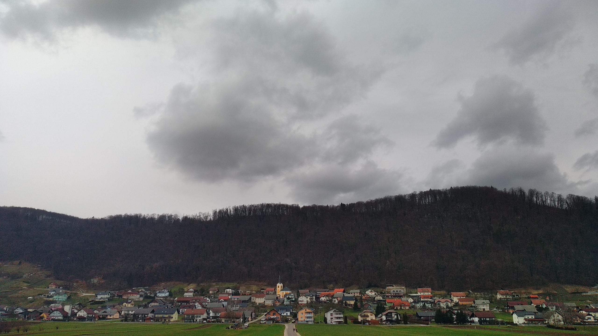

O STRAŽI
Občina Straža je mlada občina saj je s svojim delovanjem pričela s 01.01.2007. Občina je geografsko zaključena enota, ki zajema 11 vasi oz. naselij: Dolnje Mraševo, Drganja sela, Jurka vas, Loke, Podgora, Potok, Prapreče pri Straži, Rumanja vas, Straža, Vavta vas, Zalog. Vse ozemlje se nahaja v katastrskih občinah Prečna, Gorenja Straža, Jurka vas in Mali Podljuben.
Jedro območja Občine je močno urbanizirano med reko Krko in Straško goro. Meji na občine Novo mesto, Dolenjske Toplice, Žužemberk in Mirna peč. Površina občine obsega 28,5 km2 in šteje 3861 prebivalcev. Največje središčno naselje je Straža, ki šteje 1961 prebivalcev. Naselja povezuje preko 60 km cestnih povezav, od katerih je 90 % asfaltiranih. Območje je povezano z državno cesto Novo mesto – Straža – Dolenjske Toplice in naprej za Belo Krajino ali Straža – Dvor in naprej za Kočevsko, oziroma Žužemberk in naprej za Ljubljano. Straža je povezana z Novim mestom tudi z železniško progo po kateri se danes odvija le tovorni promet. Proga povezuje z gospodarskim tirom tudi državne rezerve, ki se nahajajo na obrobju Straže pod pobočjem Straške gore. V občini je razvita lesna industrija, gozdarstvo, kmetijstvo in različna obrtna dejavnost. Deluje osnovna šola, vrtec, zdravstvena in zobozdravstvena postaja, lekarna, banka, pošta, knjižnica, več trgovin, bencinski servis in več gostinskih lokalov. V Občini je tudi župnija, ki deluje preko svojih dveh podružničnih cerkva in še dveh iz župnije Prečna. Osrednja cerkev Sv. Jakoba z župniščem je v Vavti vasi. Tam je tudi glavno pokopališče z novejšo mrliško vežico. Kulturno in športno življenje ter ostale proste aktivnosti se odvijajo v okviru številnih društev in interesnih skupnosti. Imamo Turistično društvo Straža, ki vsako leto organizira osrednjo prireditev kraja imenovano Straška jesen. Zelo so aktivni še Kulturno društvo, gasilska društva, upokojensko društvo, rafting klub in druga. Občina razpolaga tudi z objekti za rekreativno in športno dejavnost. V sklopu območja občine je letališka steza Letališča Prečna, in nudi možnost razvoja s športno rekreativnega področja.
STATISTIKA
Občina Straža je bila ustanovljena leta 2007 in zajema 11 vasi oz. Naselij: Drganja sela, Jurka vas, Loke, Podgora, Potok, Prapreče pri Straži, Dolnje Mraševo, Rumanja vas, Straža, Vavta vas, Zalog. Občina leži ob reki Krki in meji na naslednje občine: občina Dolenjske Toplice, občina Mirna Peč, občina Novo mesto, občina Žužemberk. Površina občine 28,5 km2 število prebivalcev pa 3.861 Občinski praznik je 22. April, ko je bila ustanovljena prva osnovna šola. Največje naselje v občini je Straža, ki ima 1961 prebivalcev in leži na nadmorski višini 179 m. Občina ima letališče s pristajalno stezo dolgo 2000 m za športna letala. Največji hrib v občini je Straška gora z najvišjim vrhom Srobotnik z nadmorsko višino 593m.

ZGODOVINA
Straža z okolico je bila naseljena že v davnini, čeprav je prvič omenjena leta 1250. To ime se je oprijelo naselja pod strmim skalnim pobočjem hriba Straške gore poraščene, pretežno z bukovjem, ki ga bujno prepleta srobotje, od tod tudi ime vrha Srobotnik. V spodnjem predelu ga krasi venec vinogradov z raztresenimi zidanicami, zdaj tudi z vikendi. Ker so nekoč tukajšnji prebivalci morali hoditi v strmino na stražo, morda čuvati grozdje pred živalmi, pticami, medvedi in še pred kom, je ostalo ime Straža.
Na obrežjih reke Krke, kjer leži omenjeno naselje, ali v njegovi neposredni bližini so prebivali staroselci kamene dobe. Znane so najdbe kamenega orodja, med drugim lepo ohranjena, na obeh straneh koničasto zaobljena sekira z izdolbeno luknjo za držalo, stara okoli 5 tisoč let.
O zgodnji poselitvi pričajo tudi najdeni ostanki utrjenega kamenega obzidja ob Krki, edino znanega prazgodovinskega gradišča na ravninskem predelu na Slovenskem, iz obdobja starejše železne dobe v 1. tisočletju pr.n.š. in odkritje okoli 100 peči za taljenje rude ter grobišča.
Kraj Straža z okolico je bil poseljen tudi v antiki, kar dokazuje najdba 10 žganih grobov iz 2. in 3. stoletja. Po sredi strmega hrbtišča Straške gore pa so Rimljani, ko so prodrli iz zasedli te kraje in širili svoja osvajanja proti severovzhodu, zgradili cesto, ostanki so še danes vidni, o dogajanju na njej pa pričajo najdeni novci.
O naseljevanju Slovanov priča ohranjeno ime vasi Sela pri Straži, ki sega v zgodnji srednji vek nekje med 6. in 9. stoletje. V vznožju omenjene Straške gore ali njenega vrha Srobotnika tik nad vasjo Straža že stoletja prijazno duhovno nagovarja farane, ljubitelje umetnosti in kulture stara cerkev sv. Tomaža s fragmenti zgodnjegotskih fresk iz 14. stoletja in romansko ladjo ter tristranim prezbiterijem z grebenastim obokom iz 17. stoletja. Od konca stoletja je tudi cerkev v nekdanji Dolenji Straži Marije vnebovzete. Čez reko v Vavti vasi jima sledi njuna mlajša a mogočnejša sestra, baročna župnijska cerkev sv. Jakoba. Straža kot naselje skupaj z Vavto vasjo se je začela razvijati v smeri moderne oziroma prihajajoče industrijske dobe v času Auerspergove lesne dejavnosti. Izkoriščanje roškega lesnega bogastva je terjalo sodobne povezave s svetom. Tako je bila v Vavti vasi na desnem bregu Krke 22. aprila 1878 zgrajena šola. Leta 1894 pa je v Stražo prisopihala dolenjska železnica, ob kateri se je razcvetela parna žaga. Električno luč sta obe naselji dobili tik pred drugo svetovno vojno, 8 junija 1940.
Poleg razvoja so prebivalci pod Srobotnikom doživljali tudi hude trenutke. Kužno znamenje ob zgornji poti vinogradov oznanja, do kje je divjala kuga. Vinograde jim je v letu 1900 - 1901 skoraj uničila trtna uš, leto kasneje pa hud mraz. Srčno so jih obnovili z ameriškimi sortami.
Pravi industrijski razcvet in lokalno občinsko oblast je Straža kot krajevno območje z nekaj vasmi doživela šele po vojni. Iz nekdanje žage je nastal moderen lesni industrijski gigant, iz skromnega, zastarelega tovornega prevoznega parka sodobno tranzitno tovorno in potniško podjetje z zametki gostinstva, močna ekonomska enota pa je bil tudi gozdni gospodarski sektor. Tako sta ob tradicionalnem, a skrčenem privatnem kmetijskem in živinorejskem zaposlitvenem področju, dopolnjenim z vinogradništvom, rasli lesna in tranzitna panoga, kar je izoblikovalo občino vse do njene nasilne ukinitve v letu 1960 z močno materialno in socialno ter duhovno osnovo. Po tem letu je vso to bogato dediščino prevzela nova občina Novo mesto, pri čemer je naselje Straža, kateremu so se po letu 1987 priključila še naselja Dolenja Straža, Hruševec in Sela, skupaj z Vavto vasjo s takrat dva tisoč zaposlenimi v podjetjih Novoles, Avtopromet in gostinstvo Gorjanci ter z Gozdnim gospodarstvom - enota Straža obdržalo prvenstvo v razvoju dolenjskih krajev. Obdržali bi ga tudi vnaprej, če bi iz krajevne skupnosti Straža nastala nova občina, kot je bilo to omogočeno drugim močnejšim novomeškim krajevnim skupnostim. Tako pa je ta začela nazadovati in naselji Straža-Vavta vas, ki sta urbano povsem spojeni in tvorita center krajevne skupnosti, sta pristali na repu razvoja najmočnejših središč Dolenjske.
PREDSTAVITEV NASELIJ
RUMANJA VAS (70 hišnih številk, 256 prebivalcev, 186 m.n.v.)
Vas obcestnega značaja ob cesti Novo mesto – Dolenjske Toplice in ob vaški cesti – Ulicah leži na rečni terasi na desni strani reke Krke. Ob jezu na Krki stoji Nosetov mlin, ki ne deluje več, na koncu vaške ceste stoji mladinski dom, v katerem so prostori za družbene dejavnosti, za domom je košarkaško igrišče. V votlinah nad reko Krko v Romitovki naj bi nekoč živeli menihi puščavnikih.
VAVTA VAS (125 hišnih številk, 435 prebivalcev, 174 m.n.v.)
Večje gručasto naselje na terasi na desnem bregu reke Krke, ob cesti Novo mesto – Žužemberk, ki tu preko mosta prečka reko Krko v Stražo. Pred mostom se cesta odcepi proti Dolenjskim Toplicam in Drganjim selam. Sredi vasi stoji župnijska cerkev sv. Jakoba iz leta 1462, pri cerkvi je pokopališče. V vasi je osnovna šola, ustanovljena leta 1878. Značilno podobo naselju daje Dularjev mlin in žaga z jezom na Krki, pri Kočmanu je večnamenski športni park z nogometnim stadionom, preko polja občasno teče ponikalnica Globočec, ki izvira iz obrha v Drganski lesi in ponikuje v vodni jami Karlovec, v kateri se nahaja človeška ribica.
JURKA VAS (45 hišnih številk, 164 prebivalcev, 169 m.n.v.)
Naselje obcestnega značaja ob cesti Novo mesto – Dolenjske Toplice leži na desnem bregu reke Krke. Na Pučnah je arheološko najdišče iz mlajše bronaste dobe, kmetija na hišnih številkah 13 in 15 je zavarovana stavbna dediščina.
POTOK (69 hišnih številk, 260 prebivalcev, 166 m.n.v.)
Je vas, sestavljena iz gručastega zaselka Volavče pri mostu v Loke in razpotegnjenega obcestnega naselja Potok ob cesti Novo mesto – Dolenjske Toplice in cesti Potok – Birčna vas. V zaselku Volavče je Golobov Mlin in žaga ter leseni most čez Krko, ki sta zavarovana stavbna dediščina. Skozi vas teče potok Potok, ki se pri naselju izliva v reko Krko.
PRAPREČE PRI STRAŽI (40 hišnih številk, 143 prebivalcev, 179 m.n.v.)
Leži v plitvi dolinici ob potoku Potoku, razpotegnjeno ob cesti Potok – Birčna vas. V bližini vasi so v 19. Stoletju kopali železovo rudo za železarno in livarno na Dvoru. Na koncu vasi proti Dolnjemu Mraševemu je mladinski dom, namenjen družbenim dejavnostim, s površinami za rekreacijo. Za vasjo je eden od izvirov potoka Potoka.
DOLNJE MRAŠEVO (13 hišnih številk, 33 prebivalcev, 205 m.n.v.)
Je gručasta vasica ob vznožju Ljubna na valovitem kraškem svetu nad povirjem potoka Potoka ob cesti Potok – Birčna vas. V središču vasi je prostor za druženje z igriščem.
DRGANJA SELA (135 hišnih številk, 249 prebivalcev, 286 m.n.v.)
Vas stoji sredi gozdov med vinsko gorico Ljuben in Dolenjskimi Toplicami. V okolici je več kraških jam. Jedro vasi je gručasto in stoji na gričku ob podružnični cerkvi Marije tolažnice žalostnih. Ob cerkvi je pokopališče. K vasi spadata tudi zaselka Ljuben in Reber. Zaselek Ljuben leži v vznožju hriba Ljubna, h kateremu spadajo tudi zidanice in počitniške hišice med vinogradi na pobočju, med katerimi je marsikatera stalno naseljena. Zaselek Reber je razložen po robu planote nad dolino Sušice.
ZALOG (39 hišnih številk, 154 prebivalcev, 168 m.n.v.)
Gručasto jedro vasi leži na levem bregu reke Krke, na nizkem gričku okoli pokopališča in podružnične cerkve sv. Martina, pri izlivu reke Prečne v Krko. V cerkvi sta grobnici rodbin pl. De Portico in Fichtenau. Skozi naselje teče železnica Novo mesto – Straža. Po naselju je dobila ime Zaloška kotlinica, zapolnjena z glinastimi nanosi, ki so bili osnova za sedaj že opuščeno opekarsko industrijo. V bližini je nekoč stal grad Zalog (Breitenau), prvič omenjen leta 1249 in obsežno arheološko najdišče. Na reki Prečni je včasih deloval Miščev mlin, v bližini vasi so topli izviri.
LOKE (22 hišnih številk, 60 prebivalcev, 166 m.n.v.)
So gručasto naselje na valoviti travnati ravnici na levem bregu reke Krke. Na severnem robu naselja teče železnica Novo mesto – Straža. Vas je povezana z naseljem Potok z lesenim mostom.
PODGORA (112 hišnih številk, 196 prebivalcev, 185 m.n.v. )
Razpotegnjeno naselje, obcestnega značaja ob lokalni cesti Prečna – Straža, ob vznožju Nove gore. K naselju spadajo zaselki Zabukovica, Nova gora in Marof. Na Marofu so obnovljena gospodarska poslopja nekdanje lukenjske graščine, Nova gora je posejana z vinogradi z zidanicami in počitniškimi hišicami, veliko je stalno naseljenih. Vas premore veliko obdelovalne zemlje, ob vaških poljih je športno letališče.
STRAŽA (663 hišnih številk, 2075 prebivalcev)
Je občinsko središče in največje naselje v Občini Straža. V naselje Straža spadajo do leta 1987 samostojna naselja Gorenja Straža, Dolenja Straža, Hruševec in Sela pri Straži ter zaselki Brezje, Resa, Jazbec in Strmole.
GORENJA STRAŽA (392 hišnih številk, 1390 prebivalcev, 175 m.n.v.)
Obsega ulice: Gradiška ulica, Na žago, Ob Krki, Pod Srobotnikom, Pod vinogradi, Resa, Stara cesta in Ulica talcev. Je jedro Straže, urbaniziran del naselja z bloki, vrstnimi hišami in individualnimi hišami ob cesti Novo mesto – Žužemberk na južnem pobočju Straškega hriba, ki ima najvišji vrh Srobotnik (593m). Pobočje hriba je bogato zasajeno z vinogradi in pozidano z zidanicami, kar daje podobi kraja poseben pečat. V Gorenji Straži se cesti Novo mesto – Žužemberk priključi lokalna cesta iz Novega mesta čez Prečno. Konec železnice Novo mesto – Straža, ki obratuje le za tovorni promet, je pri velikem silosu Zavoda RS za blagovne rezerve v Strmolah. V kraju se je po drugi svetovni vojni razvila močna lesna industrija, gonilna sila razvoja kraja, ki je zaposlovala večino krajanov. Na območju Gradišča so izkopali ostanke edinega poznanega železodobnega ravninskega gradišča, pri gradnji železniške postaje so odkrili večje število peči za taljenje železove rude. Nad starim jedrom naselja stoji podružnična cerkev sv. Tomaža, ki pa v prvih pisnih virih o kraju iz leta 1250 ni omenjena, prvi izpričani vir o cerkvi je iz leta 1681.
DOLENJA STRAŽA (211 hišnih številk, 448 prebivalcev, 210 m.n.v.)
Obsega ulice Drča, Dule, Gaj, Novomeška cesta in Podreber. Leži ob cesti Prečna - Straža na prisojnem pobočju Cerovega hriba, pod robom Ajdovske planote. V Brezju je nekdaj delovalo več opekarna. V jedru naselja stoji podružnična baročna cerkev Vnebovzetja matere božje iz leta 1690. Cerkev je spomenik baročne umetnosti na Dolenjskem in ima status kulturnega spomenika. V Brezju pod vasjo je nekdaj delovalo več opekarn.
HRUŠEVEC (26 hišnih številk, 112 prebivalcev, 168 m.n.v.)
Leži na loki na levem bregu reke Krke ob železnici Novo mesto – Straža in lokalni cesti Zalog – Straža. Sestavljen je iz starega jedra vasi Sp. Hruševec, ki leži pod železniško progo Novo mesto – Straža in ima sedaj naslove Straža, Sela 1- 11 in novejšega dela Zg. Hruševec z naslovi Straža, Hruševec 1 – 25. V vasi stoji Šimančkov toplar, kozolec, ki je zaščiten kot stavbna dediščina. Okolico vasi reka Krka občasno poplavlja.
SELA (34 hišnih številk, 125 prebivalcev, 167 m.n.v.)
Leži na loki na levem bregu reke Krke ob železnici Novo mesto – Straža in lokalni cesti Zalog – Straža. Naselje je sestavljeno iz starega jedra Sel, ki ležijo pod železniško progo in imajo sedaj hišne številke Straža, Sela 21 – 44 in novejšega dela, zaselka Jazbec, hišne številke Straža, Hruševec 31 – 61. Okoli vasi so obsežna rodovitna polja, v bližini se nahaja arheološko najdišče.